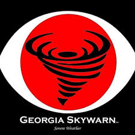
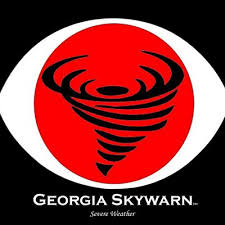

Welcome to the Peach State Emergency Intertie System
Partners with the Georgia Amateur Radio Emergency Service (ARES)
and
The National Weather Service "Georgia SKYWARN Linked Repeater System"
YOU ARE NEEDED TO HELP MAKE A DIFFERENCE IN TIMES OF DISASTER
SUPPORT YOUR LOCAL "ARES" PROGRAM AND NETS!
About the Peach State Intertie
The PEACH STATE INTERTIE is a system that involves the linking of individual repeater systems into one large unified system.
The primary purpose of the intertie is to enhance SKYWARN, and General Amateur Radio Communications and the Amateur Radio Emergency Service in the Middle Georgia area.
By utilizing linking technology, Peach State Intertie provides excellent coverage of a good portion of Central Georgia area and good usable coverage into surrounding regions.
The intertie utilizes UHF frequencies to link member repeaters together which provides greater coverage over the Central Georgia area.
The intertie gives users that are operating with handheld and mobile radios coverage abilities they have never had before.
The extended coverage the intertie provides will only enhance the ability of the SKYWARN Linked Repeater System to function as a public service to our area.
We encourage the use of this intertie system by all radio amateurs as long as you uphold the high standards of practice our fraternity has adopted and upheld through the years.
This intertie belongs to all of us...enjoy it!
Intertie Repeaters and Echo Link Nodes
Full Time Linked Repeaters
Automatic Linked or Linked On Command Repeaters (Part Time Linked)
Standby Mode
Monroe County Link To Hub Repeater For Georgia SKYWARN Net From Peachtree City National Weather Service
Join the Peach State Intertie
For inquiries on your repeater becoming a member of the Peach State Intertie, contact us at: